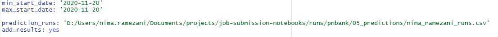

Subset Scorer runs one model multiple times, each time with a random subset of features and scores the features based on feature importance and the performance of the model in which the feature is used. You can specify model type and its hyper-parameters as well as number of runs and a filename and path to save the results.
In subset scorer, we train a model multiple times each time with a random subset of features and score them. The Greedy Feature Scorer (GFS) module implements a different algorithm for feature selection. In greedy feature scorer, we keep the best model and all its features (best model is the model with highest performance). Random subsets are then taken from the remaining features which are not among the features by which the best model is trained. Random subsets are added to the existing features of the best model and a new model is trained. If in any step, the new model came up with higher performance than the best model, it replaces the best model.
This module computes a number of correlation metrics for the features.
Use this module to compare the performances of multiple models.
This module runs all the saved models and
This module copies a runid of ML-Mapper from the s3 bucket into your local workspace. This is one of the few modules which do not have a config file. The ML-Mapper id and path to the local copies are both specified in the master config.
You can run this IO module, in two ways: * In R-Studio: 1. goto the
data-science-tools in the bottom-right file pane. 2. from
top menu, goto Session -> Set Working Directory -> To Files Pane
Location 3. from the file pane goto folder io and select copy_mlmapper.R
4. click on source in the upper-right corner of the upper-left source
pane * From Command line: 1. Open a new shell window (cmd
in Windows/terminal in Mac) 2. Change directory to the root
of data-science-tools repository. 3. Run
Rscript R_Pipeline/io/copy_mlmapper.R
The local copy of the ML-Mapper is saved locally in a folder named as
the first 8 letters of the ML-Mapper id in the S3 bucket. The table is
initially in row-wise parquet format as it is saved in the S3vbucket.
Each parquet file is a partition which contains a subset of rows but all
the columns. To build a Wide Table out of the parquet files, it should
first be saved in column-wise format. We currently save it in
column-wise partitions in .csv format. This conversion is
done by a Python jupyter notebook found in the IO modules named as
parquet2csv.ipynb. The .csv files will be put
in a folder named csv in the root folder of the local
ML_Mapper copy.
When you build a Wide Table out of the csv files, each column of the
table will be saved in .RDate format. These
.RDate files are all R_Pipeline needs to read from
ML-Mapper. These files will be saved in a folder named
wide, alongside a file named as wide.rds in
the root folder of the local ML-Mapper copy, which establish the Wide
Table. After the WideTable is built, you will not need .csv
and .parquet files and you can remove them if you like to
free space.
This module copies one or prediction folders associated with an agent-id, from the s3 bucket into your local workspace. You can either specify an agent run-id and/or model run-id to be copied or choose a runs file from output of a job submission notebook. This module has a small config file. Here we bring three of examples of config file for copy prediction:

As you can see, a prediction runs file is specified with a date range filter. Copy prediction copies all runids of successful runs in the runs table within the specified date range.
This module builds a WideTable out of MLMapper to work with in the R Pipeline.
These are modules that make a bridge between the R pipeline and the El Python Pipeline. There are modules that create config files that you can use them in the Python Pipeline.
This module creates EPP config for ml-sampler.
This module creates EPP prediction config from a R Pipeline prediction config. This is useful when you want to run some of your R-Pipeline models in the EPP.
El Python Pipeline↩︎